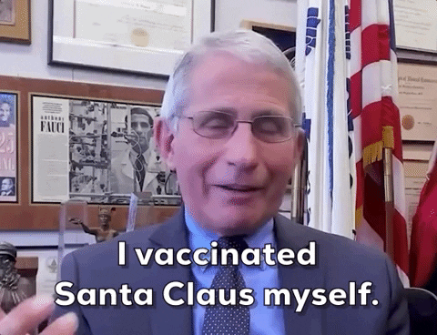

Analyse Public Opinion of Covid Vaccines
I did this project back in March 2021. I had just started with my Masters in Computer Science program and because of the pandemic the university was online. ...
I did this project back in March 2021. I had just started with my Masters in Computer Science program and because of the pandemic the university was online. It was a grim time as India was battling with its second and the deadliest wave of Covid. Vaccines had recently rolled out in India and most of us were still struggling to book an appointment. But there was a lot of uncertainties among public regarding the vaccines as there were at least 5 different vaccines that have been introduced in market.

During that time, I had just started exploring the field of NLP, and was eager to put my hands on it. So I thought why not use the NLP to analyse the sentiments of public regarding different vaccines. I had previous experience in web scraping and there is no better way to learn than to apply it to a real world problem.
Now, this was at the time when Large Language Models were unheard of, and every problem was bein g solved using some kind of Neural Network, but because I wanted this to be an introduction to NLP, I wen twith the tradition ML based NLP.
First things first
Enable typographer option to see result.
(c) (C) (r) (R) (tm) (TM) (p) (P) +-
test.. test… test….. test?….. test!….
!!!!!! ???? ,, – —
“Smartypants, double quotes” and ‘single quotes’
This is bold text
This is bold text
This is italic text
This is italic text
Strikethrough
Blockquotes can also be nested…
…by using additional greater-than signs right next to each other…
…or with spaces between arrows.
Unordered
+, -, or *Ordered
Integer molestie lorem at massa
1.Start numbering with offset:
I did this project back in March 2021. I had just started with my Masters in Computer Science program and because of the pandemic the university was online. ...